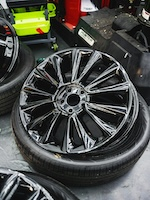
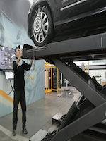

Tire Installation
At Johnny's Tires, we know how important the tires are to a safe smooth ride in your vehicles. It is a guarantee that our expert tire installation will mount your new tires on the rim with accuracy and care. With the latest equipment and best practices in the industry, we assure you that your new tires will be installed properly to ensure optimal performance and lifespan. If you are simply upgrading your tires or replacing worn out ones, we can take care of all aspects—all the way from making sure that your wheels are in good shape to proper inflation and alignment. On your way out, you will know Johnny Tires It can not be better.
Tire Balance
Even short trips can be unpleasant — and unsafe — when you're experiencing vibrations or uneven tire wear. When you need proper tire balancing in Brockton, go see the experts at Johnny's Tires. We utilize state-of-the-art balancing technology to offset the load and guarantee that your tires rotate without any unwanted wobbling or trembling. Balanced tires prolong the life of your tires, increase fuel mileage and improve driving safety. You can trust us to balance your tires correctly so that you feel confident on the road ahead.
Wheel Alignment
Wheels are misaligned, which can cause tires to wear improperly, the car not to handle well, and use more fuel. With comprehensive wheel alignment services from our team, Johnny's Tires has you covered to keep your car running its best. Our experienced technicians ensure perfect wheel alignment to the manufacturer settings of your vehicle. From hitting a pothole to feeling your car pull one direction or the other, we can take care of your alignment needs. Our service will provide you with sharper steering, greater control and a more comfortable ride—increasing tire longevity and vehicle performance.
